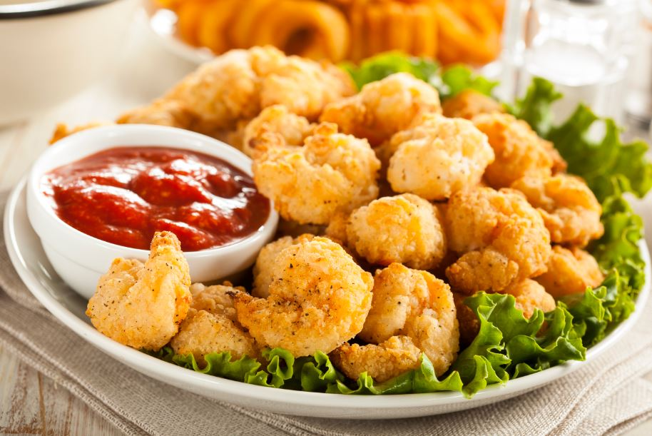
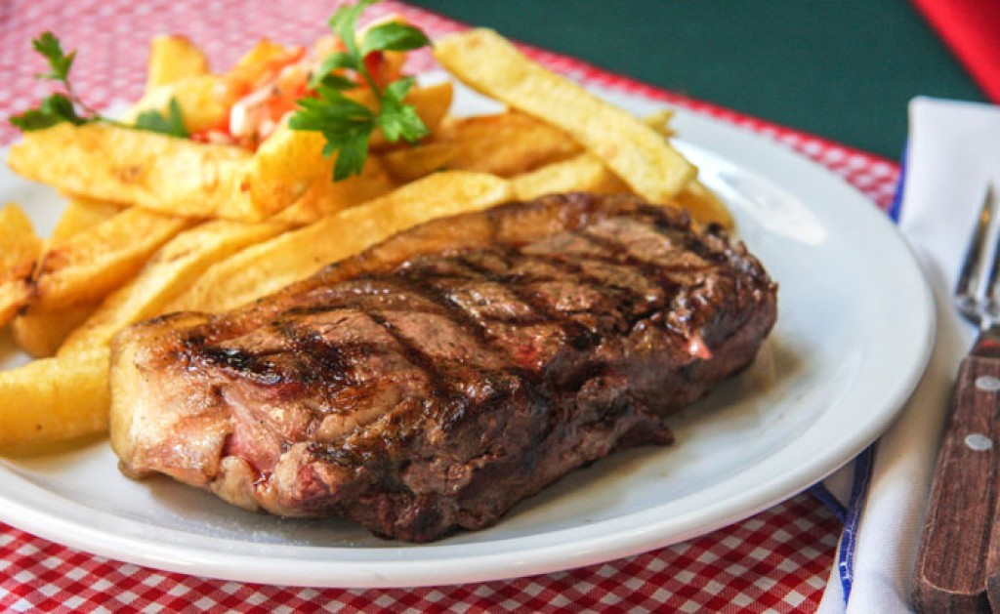

El camarón rebozado es un plato de camarones rebozado.Con un sabor muy delicioso y muy crocante eso causa una sencacion increible en la boca.
$636

El bife de chorizo es un plato muy conocido en Argentina.Cuando te lo comes sientes un sabor muy jugoso y tentador
$330,84
El flan es un plato muy recomendable en Argentina.Que tiene un sabor fabuloso a caramelo y tiene una increible forma.
$347